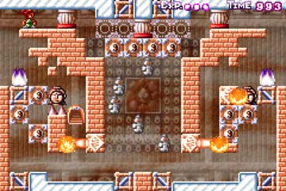
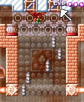
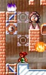
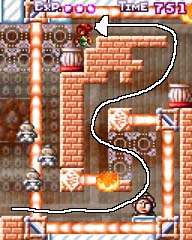
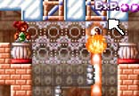
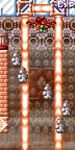
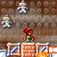
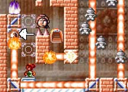
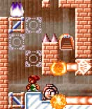

この面は…、、、う、美しい！
|  | 4-14 何を隠そう、ＭＩＲが最も気に入っている面です。 |
攻略の流れ
 |
スタート直後右へ行き、ブロックを消して下へ落ちます。 矢印の反射板の角度を変えておくのを忘れずに。 また、下へ落ちる際に、土偶を斬りつけないよう気をつけてください。 あとでまたこの穴を落ちる時に、難しくなってしまいます。 |
 |
次はマップ左下。 図のように、ブロックを消してください。 |
 |
次に画面右側をぐる〜っと回って、上に戻ります。 特に問題ないですね。 |
 |
中央上に戻ったら、図のようにブロックを出現させます。 矢印の反射板を、切り替えておくのを忘れずに。 |
 |
そしたら、図の位置でブロックを消します。 この状態で、もう一度下に落下してください。 落ちる最中に剣を空振りして、 落下速度を調節するのがコツです。 |
 |
無事落下できたら、右下の反射板を切り替え、 レーザーを一時消します。 その後、もう一度右下の反射板を切り替え、 レーザーが上へ行って下へ戻ってくるまでの間に、 スッと左へ逃げてください。 |
 |
すると、図のような位置関係になると思います。 そしたら、矢印のブロックを消してください。 頭を焼かれないよう気をつけて…。 |
 |
はい、もうクリアできますね。 でめたし、でめたし…。 |
この面は、自分としては非常にエレガントな面になったと思います。
真ん中の大穴を、2度落ちる、
しかも2回目は、左右をレーザーに挟まれたまま落ちる、という面を作ろうとして、
かなり試行錯誤しました。
もし黒で、これ以外の（もっと簡単な）クリア方法があったらちょっとショックですが、
その方法を見つけた人がいたら、
おめでとう。ＭＩＲより頭良いです。